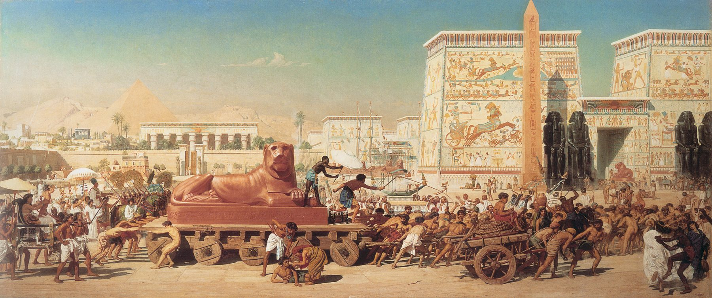

Unit 5 · Historical investigation · Lesson 7
Historians disagree: examining interpretations
Two accounts of the same builders: why do they differ, and how do you say whose view is whose?

Year 11 Ancient History · Present with → or space · Read on a phone with R
Review · books closed · 6 minutes · press K for the timer
Five questions and a writing item
- Which two earlier writers does Arrian trust most, and why? Ptolemy and Aristobulus. Aristobulus served under Alexander on the expedition; Ptolemy accompanied him, and as a king afterwards he had more to lose by falsifying the facts (Arrian, Anabasis, Preface, trans. Chinnock 1884).
- You find a web page with no author. Name two moves of lateral reading. Any two: leave the page after a quick scan; open new tabs and search the organisation’s or author’s name, not the page’s claims; read what others say about them; come back and decide what the page is reliable for.
- What does ‘n.d.’ mean in a reference, and when do you use it? No date: use it when the page shows no date. A © year in the footer belongs to the whole site, not to the page. Example: Ancient Egypt Research Associates (n.d.).
- Where does Wikipedia sit on the reliability ladder, and what is it good for? Rung 4: a lead. Use it to find the scholars it cites (for example Tallet’s edition of Merer’s papyri), then read and cite them, not Wikipedia.
- What is an interpretation, and how does it differ from a representation? An interpretation is a historian’s evidence-based explanation of the past. A representation is a depiction of the past (a painting, a film, a reconstruction) shaped by its maker’s time and purpose.
- Writing · paraphrase or patchwrite? “Khufu forced all the Egyptians to toil for him.” Patchwriting. It keeps Godley’s sentence and swaps in synonyms (compelled → forced, work → toil), and it has no citation. A paraphrase changes the structure as well as the words, then cites the source (Lesson 5). Forced is also stronger than the Greek verb, which means ‘ordered’.
Mark your own answers in a different colour. Which question did you find hardest?
Learning intentions and success criteria · 2 minutes
Today’s goals
- examine differing interpretations of the past
- attribute each view precisely
- explain the difference between an interpretation and a representation
- identify a historian’s claim and the evidence behind it
- attribute views with precise reporting verbs and the right tense
Syllabus outcomes: AH-11-05 analyses different types of sources for evidence to support a historical account or argument · AH-11-06 explains differing interpretations and representations of the past · AH-11-07 communicates historical understanding, applying historical knowledge, terms and concepts. Life Skills: AH-LS-09 identifies different interpretations of the past · AH-LS-11 communicates information about the past using historical terms and concepts.
Note-making · the routine for the whole course
How to structure your notes
questions and key terms, written after
short phrases, arrows (→ leads to), abbreviations (c. = about; n.d. = no date)
- 1A new lesson, a new pageA cue column about a quarter of the page wide; title and date at the top; room for a summary at the bottom.
- 2Listen and look, then writeDon’t copy while views are laid side by side. Phrases, not sentences, and write who said each one.
- 3Write your own notes at the ✎ checkpointThen compare with the model notes, one row at a time. Add what you missed in a second colour.
- 4Write the cue questions afterwardsUse exam verbs: explain, examine, assess. To revise, cover your notes and answer the cues.
- 5Your interpretation cards are separateNotes hold what you learn; an interpretation card records one view in your own topic: claim, evidence, assumptions, when and why written. One checkpoint today.
Key vocabulary · add to the unit word wall
Words for examining interpretations
| Research terms | Meaning |
|---|---|
| Interpretation | A historian’s evidence-based explanation of the past. |
| Representation | A depiction of the past shaped by its maker’s time and purpose. |
| Contestability | The idea that interpretations are debated and can change with new evidence. |
| Added today | Meaning |
| Slavery | Cambridge Dictionary: ‘the condition of being legally owned by someone else and forced to work for or obey them’. |
| Corvée | Wikipedia: ‘a form of unpaid forced labour that is intermittent in nature, lasting for limited periods of time’: work owed to a ruler. |
| Writing terms | Meaning |
|---|---|
| Examine (NESA) | ‘Inquire into.’ Look closely at an interpretation: its claim, evidence and assumptions. |
| Reporting verb | A verb that says who claims what, and how: states, claims, confirms, presents … as. |
| Added today | Meaning |
| Attribute | To say whose view it is, by name, with a verb that fits how sure they are. |
| Interpretation card | A card that records a view: claim, evidence, assumptions, when and why it was written. |
1 · Why accounts differ · I do — interpretation or representation, and five reasons · then cold call
Why two accounts of the same past can differ
A historian’s evidence-based explanation of the past: Lehner’s or Tallet’s reading of what the excavated town and the papyri show.
A depiction of the past (a painting, a film, a reconstruction), shaped by its maker’s time and purpose.
Two historians study the same evidence and still disagree. Which of the five reasons could explain it?
Questions, values and methods. They may ask different questions, weigh the same evidence differently, or value different things. The evidence and the time of writing can differ too, but they do not have to.
| Reason | On our class question |
|---|---|
| Different evidence | Herodotus used what Egyptian informants told him (the chapter opens “They said”). The excavators use a town, its animal bones and Merer’s papyri. |
| Different methods | Listening and retelling, against digging, studying bones and reading papyri. |
| Different questions | Herodotus tells how a king ruled, setting Khufu against a well-governed Egypt; the excavators ask where the workers lived and what they ate. |
| Different values | In Godley’s translation, Herodotus passes on his informants’ claim that Khufu brought the people to “utter misery”; Lehner says his respect for the builders keeps growing (NOVA 1997). |
| Different times of writing | Herodotus wrote about 430 BCE, more than 2,000 years after Khufu. The excavations began in 1988, and Tallet’s edition of the papyri appeared in 2017. |
1 · Why accounts differ · I do — where to look for a debate in your own topic · then cold call
Finding the debate in your topic
Earlier explanations for the Assyrian collapse focused on the roles of internal politico-economic conflicts, territorial overextension, and military defeat.
… we present a high-resolution and precisely dated speleothem record of climate change … which suggests that … megadroughts … contributed to its eventual political and economic collapse.
A. Sinha et al., ‘Role of climate in the rise and fall of the Neo-Assyrian Empire’, Science Advances 5(11), 2019 · open access, peer reviewed · an excerpt of the abstract; the ellipses mark cuts
The old view, named as such
How sure the authors are
Their own claim
Which words show there is a debate, and what are its two sides?
‘Earlier explanations’ against the authors’ own: the earlier view is internal conflicts, overextension and military defeat; the authors’ climate record suggests that megadroughts contributed. Notice their verb: suggests, not proves.
- 1Review articlesThey survey the views on a question: who argues what.
- 2Book reviewsA reviewer says what the author argues, and where they agree or disagree.
- 3Signal words in abstracts‘However’, ‘but’, ‘earlier explanations’, ‘challenges’: the writer is turning against another view.
- 4Then name both sidesWho holds each view, and on what evidence? That is your interpretation card.
Search move from Lesson 3: add debate OR interpretation OR historiography to your topic.
1 · Why accounts differ · I do — the interpretation card: claim, evidence, assumptions, when and why · then cold call
I do: the first view, Herodotus’s picture of Khufu’s reign
They said that Egypt until the time of King Rhampsinitus was altogether well-governed and prospered greatly, but that Kheops, who was the next king, brought the people to utter misery.
… he compelled all the Egyptians to work for him.
They worked in gangs of a hundred thousand men, each gang for three months.
Herodotus, Histories 2.124 · a Greek writer, about 430 BCE, more than 2,000 years after Khufu · trans. A. D. Godley (Loeb, 1920–22), as revised by the Perseus Digital Library · compelled is Godley’s word: the Greek verb means ‘ordered’
Whose claim: they said
Godley’s word, not the Greek verb’s
Whose picture of Khufu’s reign is this: Herodotus’s own, or someone else’s?
His informants’, passed on by him. The chapter opens They said, so the claims about the gangs and the misery are what Egyptians told him. Attribute them that way: Herodotus reports them.
An interpretation card, filled in · class model on the class question
| Claim | Khufu compelled all the Egyptians to work for him, in gangs of a hundred thousand men serving three months each, and brought the people to utter misery. (Godley’s wording) |
| Evidence | What Egyptian informants told him: the chapter opens They said. Nothing in the chapter shows what they based it on. |
| Assumptions (our reading) | That informants speaking more than 2,000 years after Khufu knew what had happened; that an order to work meant misery; that “a hundred thousand” is a count. |
| When and why | About 430 BCE. The chapter sets Khufu against the well-governed Egypt before him, so the story seems to serve a picture of a bad king. |
1 · Why accounts differ · I do — the second view, the excavators’ picture · then cold call
I do: the second view, the excavators’ picture
Purpose-built by the crown, this city served as the base of operations for constructing the great pyramid complexes of kings Menkaure, Khafre, and probably Khufu.
Massive royal silos stood in a large compound where the grain was distributed to create the beer and bread used to help feed this massive workforce.
Ancient Egypt Research Associates (n.d.), ‘The Lost City of the Pyramids (Heit el-Ghurab)’ · the team that has excavated the town since 1988: its own summary
An enormous amount of fish, bird, cattle, sheep, goat, and pig bones were found, revealing that the state ensured that the workers were in good health so they could fulfill their physically demanding responsibilities.
Ministry of Tourism and Antiquities (Egypt) (n.d.), ‘Workers’ Town and Cemetery’ · a government page; it does not name who dug the town
An interpretation card, filled in · class model on the class question
| Claim | The crown built a town for the pyramid workforce, and housed and fed its crews. |
| Evidence | Royal grain silos, beer and bread (AERA); animal bones (the Ministry); Merer’s logbooks (Tallet, as reported by Weiss 2022). |
| Assumptions (our reading) | That the town’s people were the pyramid crews; that regular food means good treatment, not only a need to keep people working; that a later reign’s town tells us about Khufu’s. |
| When and why | Dug since 1988; the AERA page is the team’s own summary. Tallet’s edition of the papyri appeared in 2017. |
The town is dated to which kings, and why does that matter for Herodotus’s claim about Khufu?
Mainly Khafre and Menkaure. The Ministry says an older settlement beneath may date to Khufu’s reign, and Weiss (2022) reports that these deeper layers have yet to be explored. So the best-excavated town is evidence for Khafre’s and Menkaure’s crews, and only probably for Khufu’s.
1 · Why accounts differ · I do — four modern voices, in their own words · then cold call
Modern voices: who says what, and how sure they sound
| Who | In their own words | How sure they sound (our reading) |
|---|---|---|
| Lehner, in a NOVA Online interview (page dated 1997) | “We don’t know if it was entirely coercive, or if, in fact, part of it was a natural community donation …” | Admits a limit on the evidence: he concedes that it is not known. |
| Lehner, in the same interview | “… it may not have been entirely coercion, but it seems that everybody owed a labor tax.” | Tentative (may, seems): he suggests a labour tax. |
| Hawass, in the page’s other interview | “Really it was love—they were not really pushed to do it.” | Almost no hedge (only “not really”): he contends that the workers were not pushed. |
| Tallet, quoted by Weiss (2022), on Merer’s boatmen | “I think the monarchy had an interest in being fair to them because it was essential to have them working well.” | Hedged by I think: he suggests the crown had a reason to treat them fairly. |
It’s difficult to say whether workers such as those who quarried stone for use in the pyramid and those who lifted the stones and placed them on the structure itself received similarly favorable treatment.
D. Weiss, ‘Journeys of the Pyramid Builders’, Archaeology, July/August 2022 · these are Weiss’s words, not Tallet’s
Which of the four sounds most sure of itself, and which words tell you?
Hawass: he states it as fact (“Really it was love”), with no may, seems or I think. Lehner’s “We don’t know”, “may” and “seems”, and Tallet’s “I think”, each mark a limit.
1 · Why accounts differ · I do — think aloud: the middle reading, and what would test it · then cold call
Slavery or corvée? A middle reading, and what would test it
the condition of being legally owned by someone else and forced to work for or obey them
Cambridge Dictionary, ‘slavery’
… a form of unpaid forced labour that is intermittent in nature, lasting for limited periods of time …
Wikipedia, ‘Corvée’ (a lead)
Herodotus’s “gangs of a hundred thousand men, each gang for three months” could describe service owed to the king, in rotation, which is not the same as slavery. Lehner suggests something close to this, with his own hedges: “it seems that everybody owed a labor tax”, and “There’s some evidence to suggest that people were rotated in and out of the raw labor force” (NOVA Online, page dated 1997). Weiss reports that Tallet believes January to March, when the papyri are silent, may have been a season when Merer’s workers could go home.
- 1Records of serviceA text or list showing who owed work to the king, and for how many months.
- 2What the crews receivedPay, rations or both, and whether it rose with the work done.
- 3What happened to those who did not comeIf there was a penalty, the service was owed; if not, it may have been a gift.
Today’s sources touch the second (the papyri record rations of bread and beer fetched for Merer’s team) but none settles the first or the third.
On these definitions, which fits the middle reading better, slavery or corvée? What does your choice not settle?
Corvée fits better: none of today’s sources says the crews were owned, and a “labor tax” is work owed for a time. But corvée is still forced labour, so the choice does not settle how coercive it was, or whether crews were paid: Hawass says the permanent workmen were, and Lehner says “We don’t know”.
2 · We do · gesture vote · 1 to 4 fingers on “3, 2, 1, show” · then cold call each camp · 5 minutes
Which view does the evidence so far support best?
- 1Herodotus’s picture: Khufu compelled the Egyptians to work for him, in gangs.
- 2The excavators’ picture: crews housed and fed by the crown.
- 3The middle reading: service owed to the king, in rotation.
- 4Not enough evidence yet to choose between them.
Cold call one student from each camp: give your best reason, name the source it comes from, and name one limit.
| Camp | A reason that holds up | Its limit |
|---|---|---|
| 1 · Herodotus | The gangs serving three months each may fit Lehner’s “labor tax” and rotation. | A claim passed on more than 2,000 years later; compelled is Godley’s word for a verb meaning ‘ordered’; “utter misery” sits uneasily with the fed crews the excavators describe. |
| 2 · The excavators | A town with royal silos, bread and beer, and bones of fish, birds and cattle. | Mostly Khafre’s and Menkaure’s day; food is not proof that the work was willing. |
| 3 · The middle reading | It fits Herodotus’s three-month gangs and Lehner’s hedged “it seems that everybody owed a labor tax”. | It is a hypothesis: no record of service has been shown to test it. |
| 4 · Not enough yet | The older layers beneath the town, which may date to Khufu’s reign, are largely unexplored, and Weiss says it is difficult to say how the stone-lifters were treated. | The question still asks how far: “not enough” has to become a degree. |
2 · We do · sort a picture: interpretation or representation? · 3 minutes · cold call
Interpretation or representation? Give your reason

Is this painting an interpretation or a representation of the past? Give the reason from today’s definitions.
A representation. It is a painter’s depiction of the past, shaped by Poynter’s time and purpose, not a historian’s evidence-based explanation. Its title points to the Bible’s story of the Israelites in Egypt, so it is not a picture of Khufu’s builders at all. It is good evidence of how a Victorian painter imagined that story, and no evidence of how Khufu’s builders worked.
Notes checkpoint
Examining interpretations
3 · You do · Writing focus · 7 minutes · I do → We do → apply
Writing focus: say whose view it is, and how sure they are
Examine: ‘Inquire into.’ (NESA, Glossary of key words) Name whose view it is, choose a reporting verb that says how sure they are, and write it in the present tense: the article still says it. What happened stays in the past.
Worked example · written for this lesson, on the class question
In Godley’s translation, Herodotus reports his Egyptian informants’ claim that Khufu “compelled all the Egyptians to work for him” (Herodotus 2.124), whereas the excavators of Heit el-Ghurab present the builders as crews whom the crown housed and fed (Ancient Egypt Research Associates n.d.).
Who + a neutral verb: he passes it on
Whose claim it really is
Exact words, short, with a citation
whereas turns to the other view
present … as, with author and date
Write your first attributed sentence now, about one view in your own topic: ‘[Name] [verb] that …, whereas [name] [verb] …’ Your Writing toolkit (booklet pages 3–4): attribution verbs.
Herodotus 2.124 (Godley’s translation) opens They said. Which verb fits what Herodotus does with this claim?
- AHerodotus proves that Khufu “compelled all the Egyptians to work for him”.
- BHerodotus reports that Khufu “compelled all the Egyptians to work for him”.
- CHerodotus claims that Khufu “compelled all the Egyptians to work for him”.
- DHerodotus presents Khufu as having “compelled all the Egyptians to work for him”.
A: one report, passed on more than 2,000 years later, proves nothing. C: claims makes it sound like Herodotus’s own assertion and puts your doubt on it; but the chapter opens They said: the claim is his informants’, and he passes it on (a historian who doubts the figure may still choose claims: Lehner says Herodotus “just claims he was told that”). D: presents … as credits Herodotus with shaping the picture; here he is passing his informants’ picture on.
3 · You do · 24 minutes, including the Writing focus apply · check first · press K for the timer
You do: find two interpretations in your own topic, and attribute them
- Find two interpretations of your topic: a review article, a book review, or an abstract with ‘however’ or ‘earlier explanations’.
- Complete an interpretation card for each, and note whose words each claim is.
- Write two attributed sentences: name the person, a verb that fits how sure they are, the present tense, an author–date citation.
- Check: does each verb match how sure they sound?
- Claim
- What exactly does this writer say? Their own words, or yours?
- Evidence
- What is it based on?
- Assumptions
- What must be true for the claim to hold?
- When and why
- When was it written, and what was its purpose?
- Attributed
- [Name] [verb] that …, with an author–date citation.
Only one view so far? Write it down with the question it leaves open, and show your teacher.
Check first: what must each attributed sentence do?
Name the person or group, use a reporting verb that fits how sure they are, in the present tense, and cite them with author and date. Quote exactly only where the wording matters, and never give a reporter’s words to the person reported.
The interpretation card with prompts, the reporting-verb bank (neutral · doubtful · supportive · interpretive), the model and the frame.
Explain why a writer’s time and purpose produced their interpretation, and judge which view is better supported.
Your teacher meets the second half of the class today, with your log and notes in hand: be ready to say which two views you found and where.
Exit ticket · 6 minutes · before you leave
The main disagreement in my topic
Finish the sentence, naming the two sides by who holds each view, and giving a reason they differ.
“The main disagreement in my topic is … because …”
the two sides named by who holds them (a person, a team or a book), not “some people”; a reason from the five (evidence, methods, questions, values or time of writing); a verb that fits how sure each side is; and the present tense for what they say.
Then check yourself against today’s three “I can” statements. Next lesson: synthesis: making sources talk to each other.
Finish your notes If time · or at home
Summary: three sentences
- What is the difference between an interpretation and a representation?
- Why can two accounts of the same past differ? Use the builders of the Great Pyramid as your example.
- How do you choose a reporting verb, and what tense do you use?
An interpretation is a historian’s evidence-based explanation of the past, whereas a representation, such as a painting, is a depiction shaped by its maker’s time and purpose. Herodotus reports his informants’ claim that Khufu “compelled” the Egyptians to work for him (Godley’s word), whereas the excavators present crews that the crown housed and fed, partly because Herodotus wrote more than 2,000 years after Khufu and the excavators study the town itself. The verb should match how sure the writer is, in the present tense: Hawass contends that the workers were not really pushed, whereas Lehner concedes that it is not known whether the labour was entirely coercive.
Practice and review · 1 of 3 · true, false, justify
True or false? Justify your answer
- 1An interpretation and a representation are the same thing. False — an interpretation is a historian’s evidence-based explanation; a representation is a depiction shaped by its maker’s time and purpose, such as Poynter’s painting.
- 2In Godley’s translation, compelled means exactly what Herodotus’s Greek verb means. False — compelled is Godley’s English and suggests force; the Greek verb means ‘ordered’. A quotation from a translation quotes the translator.
- 3In Weiss’s article, the words about “the popular notion” of oppressed slaves are Tallet’s. False — they are Weiss’s own words, reporting what Tallet believes. Tallet’s own words are the ones in quotation marks and attributed to him, such as “I think the monarchy …”.
- 4Merer’s papyri show how every worker on the Great Pyramid was treated. False — they record the work of one phyle of about 40 men, and Weiss says it is difficult to say whether the stone-quarriers and stone-lifters were treated as favourably.
- 5In the NOVA Online interview (page dated 1997), Lehner stated that the builders were certainly willing workers. False — he said it “may not have been entirely coercion”, and “We don’t know if it was entirely coercive”. Hawass was the one without a hedge.
- 6In NOVA’s 2019 documentary, “a proud and willing nation” is the narrator’s phrase, not Lehner’s. True — the transcript gives those words to the narrator. When you quote a film, name who speaks.
Practice and review · 2 of 3 · writing the attribution
Choose the verb, and attribute a debate on the Assyrian question
For each, write one sentence in the present tense with a verb that fits, and an author–date citation:
- Lehner: “We don’t know if it was entirely coercive …”
- Hawass: “Really it was love—they were not really pushed to do it.”
- Lehner: “There’s some evidence to suggest that people were rotated in and out of the raw labor force.”
1. Lehner concedes that it is not known whether the labour was “entirely coercive” (Lehner 1997).
2. Hawass contends that the workers “were not really pushed to do it” (Hawass 1997).
3. Lehner suggests that people “were rotated in and out of the raw labor force” (Lehner 1997).
Hawass, Z. (1997) ‘Interview with Zahi Hawass’, in ‘Who Built the Pyramids?’, NOVA Online, 4 February, viewed [date], https://www.pbs.org/wgbh/nova/article/who-built-the-pyramids/
Lehner, M. (1997) ‘Interview with Mark Lehner’, in ‘Who Built the Pyramids?’, NOVA Online, 4 February, viewed [date], https://www.pbs.org/wgbh/nova/article/who-built-the-pyramids/
For Why did the Assyrian Empire collapse in the late 7th century BCE?, use the Sinha et al. (2019) abstract from ‘Finding the debate in your topic’. Write one sentence that attributes the earlier explanations and the authors’ own view, with a different reporting verb for each. Cite Sinha et al. (2019).
Sinha et al. (2019) report that earlier explanations focused on “internal politico-economic conflicts, territorial overextension, and military defeat”, whereas their own climate record suggests that megadroughts “contributed to [the empire’s] eventual political and economic collapse”.
Practice and review · 3 of 3 · cover your notes and answer from memory
Quick checks
- What is the difference between an interpretation and a representation? An interpretation is a historian’s evidence-based explanation; a representation is a depiction (film, painting, reconstruction) shaped by its maker’s time and purpose.
- Name the five reasons accounts of the same past differ. Different evidence, methods, questions, values and times of writing.
- What does an interpretation card record? The claim, the evidence, the assumptions, and when and why it was written; and whose words the claim is.
- In Weiss (2022), how can you tell which words are Tallet’s own? They are in quotation marks and spoken by him (“I think the monarchy …”). A sentence such as ‘Tallet believes …’ is Weiss reporting his view.
- What is the difference between slavery and corvée? Slavery: a person is legally owned and forced to work. Corvée: unpaid forced labour owed to a ruler for limited periods. Neither makes the work willing.
- Which reporting verb says a writer admits a limit on their own case, and which keeps your distance from a claim? Concedes admits a limit; claims (or alleges) keeps your distance, so say why. And use the present tense for what they say.
Sources and credits
Where everything comes from
Herodotus, The Histories 2.124, A. D. Godley’s translation (Loeb, 1920–22), as revised by the Perseus Digital Library (CC BY-SA 3.0 US). Ancient Egypt Research Associates (n.d.), “The Lost City of the Pyramids (Heit el-Ghurab)”. Egypt, Ministry of Tourism and Antiquities (n.d.), “Workers’ Town and Cemetery”. NOVA Online, “Who Built the Pyramids?” (page dated 4 February 1997), with its interviews of Mark Lehner and Zahi Hawass. D. Weiss, “Journeys of the Pyramid Builders”, Archaeology (July/August 2022), quoting Pierre Tallet and Mark Lehner. A. Sinha et al., “Role of climate in the rise and fall of the Neo-Assyrian Empire”, Science Advances 5(11) (2019), open access (CC BY-NC), quoted briefly. Cambridge Dictionary, ‘slavery’. Wikipedia, ‘Corvée’ (CC BY-SA 4.0; a lead, for the term only). NOVA, “Decoding the Great Pyramid” (2019), from the PBS transcript. Arrian, Anabasis of Alexander, Preface, trans. E. J. Chinnock (1884; public domain), as in Unit 2, Lesson 12. All checked 27 November 2026.
Further reading, not quoted here: M. Lehner and Z. Hawass, Giza and the Pyramids: The Definitive History (University of Chicago Press, 2017). The interviews give no date of their own, so they are cited by the date of the NOVA Online page.
Outcomes and content: NSW Education Standards Authority (NESA), Ancient History 11–12 Syllabus (2024). © NESA. NESA, Glossary of key words (definition quoted word for word).
- The Great Pyramid of Giza, built for King Khufu (Kheops in Herodotus) · Photo: Nina Aldin Thune · CC BY 2.5 · source
- Israel in Egypt, a painting by Edward Poynter, 1867 (Guildhall Art Gallery, London) · Painting: Edward Poynter (1836–1919), reproduced via the Art Renewal Center · Public domain · source


All images are public domain or openly licensed, and were resized or cropped for the web. Each is shared under the licence shown. No film stills or posters are shown (copyright): a painting stands in as the representation.